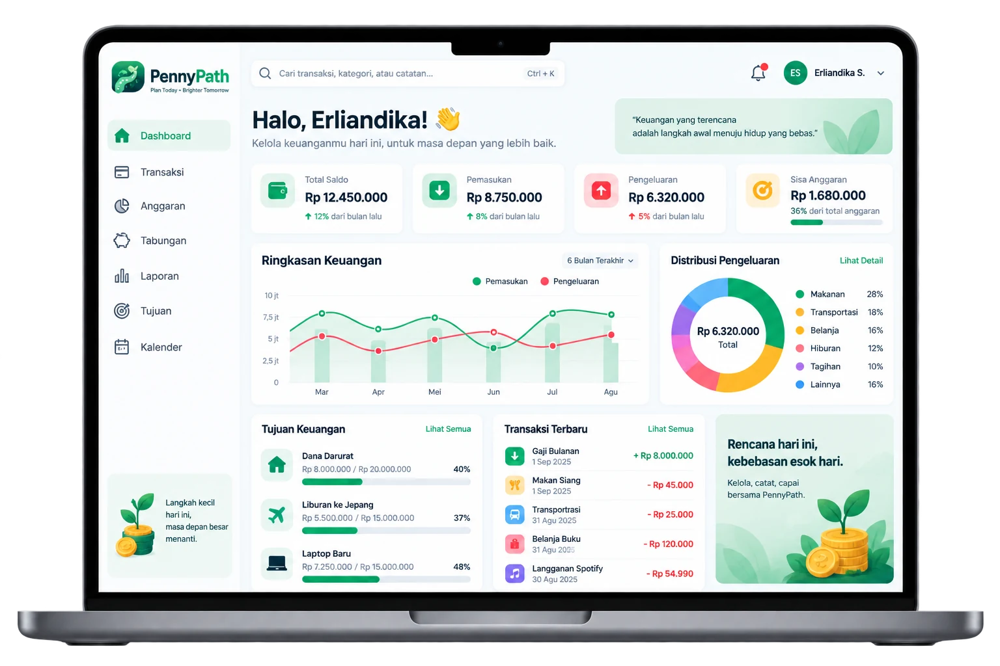

Penny Path
Student-focused financial literacy and budgeting assistant combining Android client, Cloud infrastructure, and ML insights.
THE PROBLEM
Students struggle with manual, reactive budgeting and lack actionable insights to recognize unhealthy spending patterns or set realistic saving goals.
WHY I BUILT IT
Built as a multidisciplinary Bangkit Academy Capstone product to transform raw student spending data into automated categorization, anomaly detection, and personalized saving recommendations.
THE SOLUTION
Native Android application integrated with a Cloud backend and ML pipeline for automated transaction categorization, monthly financial recaps, and anomaly detection.
MY ROLE
Mobile Developer · Capstone Team Lead (MD Path)

ARCHITECTURE & DECISIONS
Engineered the native Android client in Kotlin with Jetpack Compose, establishing clean architecture and seamless API integration with the cloud backend and FastAPI ML inference services. Coordinated capstone milestones across Mobile, Cloud, and Machine Learning teams.